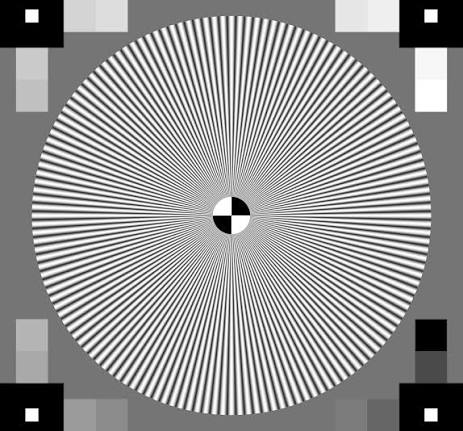

ASSIGNMENT 04 / GAMEDEV 2026
CSS
Explore color, typography, and visual style.
01 / STYLE EXPERIMENT
One element, two styles.
Click the button to switch the colors on the italic text.
THE ORIGINALThis is italicizedWITH DIFFERENT CSSThis is italicized... but with different CSS
02 / MORE CSS
Textures & shapes.
A background image for writing and a rounded image, side by side.
ROUNDED IMAGE
